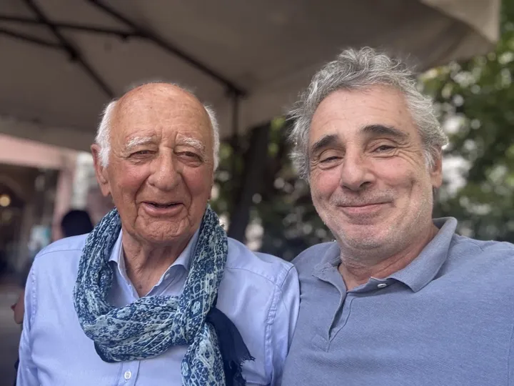
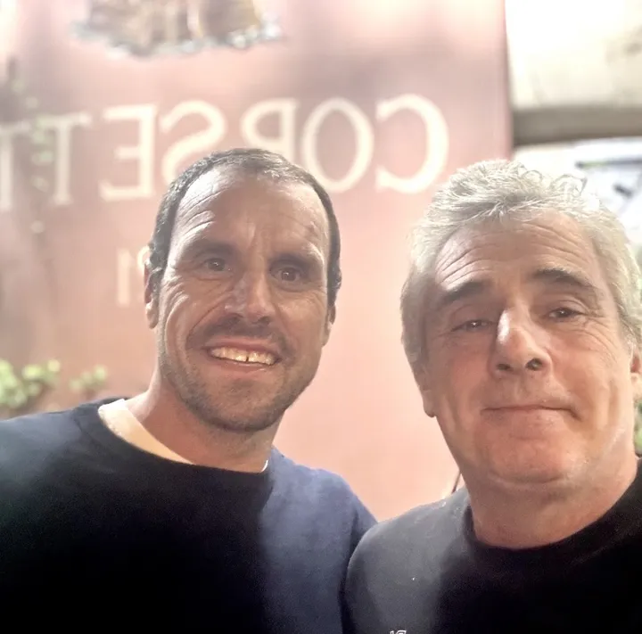
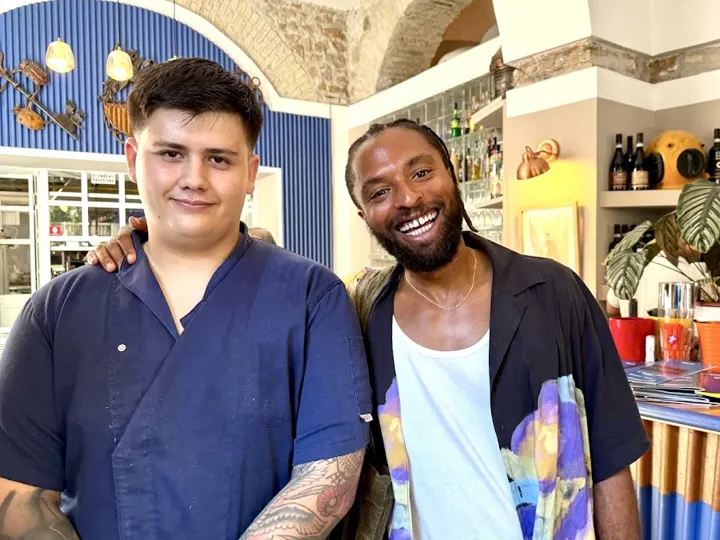
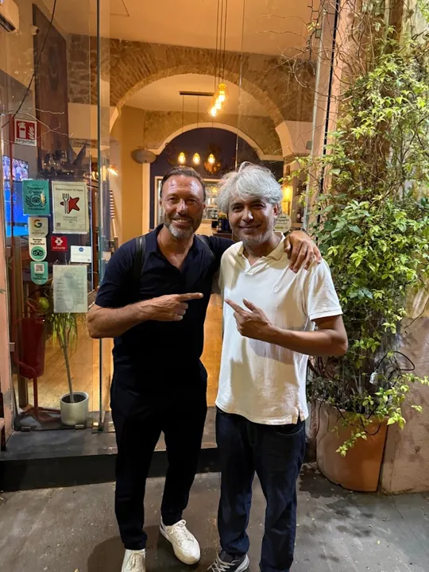
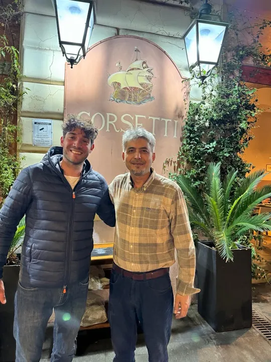
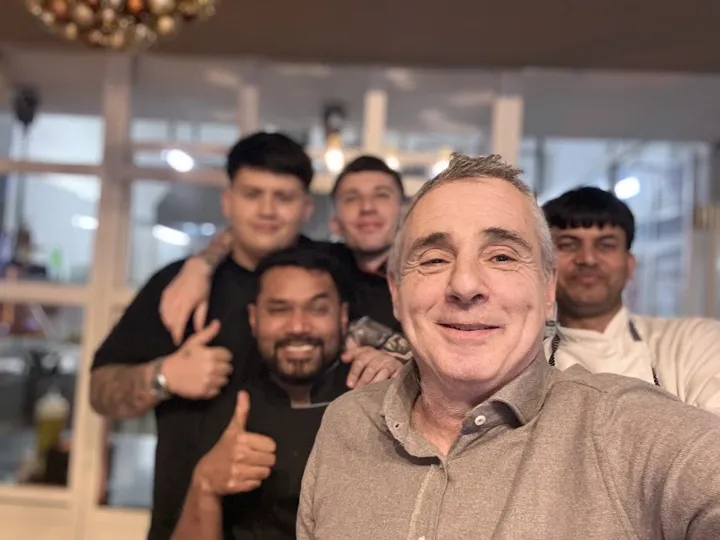

Faces at our tables
Friends of the Osteria
In Piazza di San Cosimato our door is always open, and everyone who sits at our tables is welcomed like family. After a traditional Roman meal and a glass of wine, we often like to take a photo together before saying goodbye.














Come visit us in Trastevere, we look forward to taking the next photo with you.
Book a table